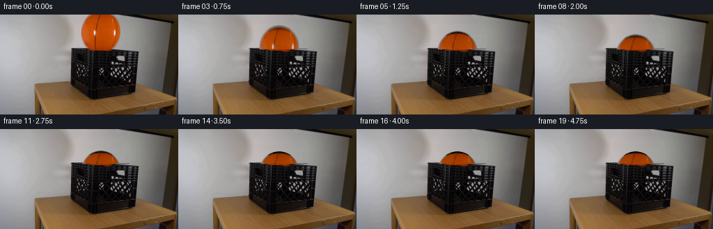
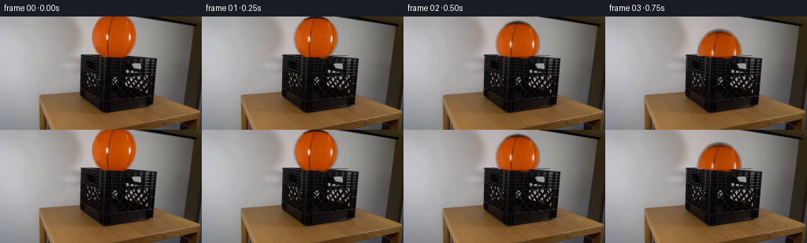

CODING AGENTS AS PIXEL WORLD MODELS
traex/DeepSeek-V4.1-Flash · 0013
点击播放 · 原生 RGB 像素
逐轮保存的候选
回放视频、检查图与代码变化。
每份候选均可单独播放。实际图片检查记录在下方工具轨迹中。
候选 01播放与检查图
点击播放 · 原生 RGB 像素


展开代码变化
--- 上一保存版本
+++ 本次保存版本
@@ -0,0 +1,280 @@
+from pathlib import Path
+
+import cv2
+import numpy as np
+from PIL import Image
+
+import artifact_io
+
+
+ROOT = Path(__file__).resolve().parent
+WIDTH = 256
+HEIGHT = 144
+FRAME_COUNT = 20
+FPS = 4
+
+# Geometry measured from the supplied frame.
+BALL_CX = 144.45
+BALL_CY = 25.40
+BALL_RX = 28.70
+BALL_RY = 29.00
+
+RIM_Y = 50
+CRATE_X0 = 101
+CRATE_X1 = 186
+CRATE_FACE_Y = 50
+CRATE_FLOOR_Y = 89.5
+
+GRAVITY = 72.0
+RESTITUTION = 0.55
+REST_Y = CRATE_FLOOR_Y - BALL_RY
+
+
+def _smoothstep(edge0, edge1, value):
+ value = np.clip((value - edge0) / (edge1 - edge0), 0.0, 1.0)
+ return value * value * (3.0 - 2.0 * value)
+
+
+def _sample_bilinear(image, x, y):
+ x0 = np.floor(x).astype(np.int32)
+ y0 = np.floor(y).astype(np.int32)
+ fx = (x - x0)[..., None]
+ fy = (y - y0)[..., None]
+ x0 = np.clip(x0, 0, image.shape[1] - 1)
+ x1 = np.clip(x0 + 1, 0, image.shape[1] - 1)
+ y0 = np.clip(y0, 0, image.shape[0] - 1)
+ y1 = np.clip(y0 + 1, 0, image.shape[0] - 1)
+ top = image[y0, x0] * (1.0 - fx) + image[y0, x1] * fx
+ bottom = image[y1, x0] * (1.0 - fx) + image[y1, x1] * fx
+ return top * (1.0 - fy) + bottom * fy
+
+
+def build_clean_plate(frame):
+ """Remove the foreground ball while preserving the wall and crate rim."""
+ plate = frame.astype(np.float32).copy()
+ rows = np.arange(HEIGHT)[:, None]
+ cols = np.arange(WIDTH)[None, :]
+
+ # Fill the occluded wall in horizontal strips. This follows the broad,
+ # smooth studio-wall gradient better than a generic inpainting kernel.
+ for y in range(0, RIM_Y + 7):
+ half = BALL_RX * np.sqrt(max(0.0, 1.0 - ((y - BALL_CY) / BALL_RY) ** 2))
+ x0 = max(0, int(np.floor(BALL_CX - half)) - 2)
+ x1 = min(WIDTH - 1, int(np.ceil(BALL_CX + half)) + 2)
+ if x1 <= x0:
+ continue
+ left = plate[y, max(0, x0 - 5):x0].mean(axis=0)
+ right = plate[y, x1 + 1:min(WIDTH, x1 + 6)].mean(axis=0)
+ ramp = np.linspace(0.0, 1.0, x1 - x0 + 1, dtype=np.float32)[:, None]
+ strip = left[None, :] * (1.0 - ramp) + right[None, :] * ramp
+ plate[y, x0:x1 + 1] = strip
+
+ # The last few rows cross the dark front rim. Keep them dark instead of
+ # allowing the brighter wall interpolation to bleed over that edge.
+ rim_band = slice(RIM_Y - 1, RIM_Y + 7)
+ rim_pixels = plate[rim_band, CRATE_X0:CRATE_X1]
+ lum = rim_pixels.mean(axis=2, keepdims=True)
+ rim_pixels[:] = np.clip(rim_pixels * 0.64 + lum * 0.16, 0.0, 95.0)
+ plate[rim_band, CRATE_X0:CRATE_X1] = rim_pixels
+
+ # Remove any orange anti-alias fringe left at the edge of the ellipse.
+ r, g, b = plate[..., 0], plate[..., 1], plate[..., 2]
+ orange = (r > g * 1.20) & (g > b * 1.03) & (r > 65) & (r > b * 1.35)
+ ball_region = ((cols - BALL_CX) / (BALL_RX + 2.5)) ** 2 + (
+ (rows - BALL_CY) / (BALL_RY + 2.5)
+ ) ** 2 < 1.0
+ fringe = orange & ball_region
+ if fringe.any():
+ mask = (fringe.astype(np.uint8) * 255)
+ mask = cv2.dilate(mask, np.ones((3, 3), np.uint8), iterations=1)
+ plate = cv2.inpaint(
+ np.clip(plate, 0, 255).astype(np.uint8),
+ mask,
+ 3,
+ cv2.INPAINT_TELEA,
+ ).astype(np.float32)
+ return np.clip(plate, 0, 255).astype(np.uint8)
+
+
+def build_ball_sprite(frame):
+ """Extract a complete, anti-aliased RGBA ball from the supplied view."""
+ size = 68
+ center = (size - 1) * 0.5
+ yy, xx = np.mgrid[0:size, 0:size].astype(np.float32)
+ dx = xx - center
+ dy = yy - center
+ norm = np.sqrt((dx / BALL_RX) ** 2 + (dy / BALL_RY) ** 2)
+
+ # Sample from the original ball. Pixels just beyond the image boundary are
+ # filled from the matching lower cap, which is the same orange material.
+ sx = BALL_CX + dx
+ sy = BALL_CY + dy
+ missing = sy < 0.0
+ sy = np.where(missing, 2.0 * BALL_CY - sy, sy)
+ color = _sample_bilinear(frame.astype(np.float32), sx, sy)
+
+ # Keep the sphere edge clean by pulling the outer ring toward the measured
+ # darker rim color, then anti-alias the silhouette.
+ edge_sample = np.clip(norm, 0.0, 1.0) / 0.88
+ edge_x = BALL_CX + dx * edge_sample
+ edge_y = BALL_CY + dy * edge_sample
+ edge_y = np.where(edge_y < 0.0, 2.0 * BALL_CY - edge_y, edge_y)
+ edge_color = _sample_bilinear(frame.astype(np.float32), edge_x, edge_y)
+ edge_mix = _smoothstep(0.82, 1.0, norm)[..., None]
+ color = color * (1.0 - edge_mix) + edge_color * edge_mix
+
+ # Subtle darkened rim, matched to the photograph.
+ rim = _smoothstep(0.88, 1.0, norm)[..., None]
+ color = color * (1.0 - 0.20 * rim)
+
+ alpha = np.clip((1.0 - norm) * min(BALL_RX, BALL_RY) + 0.30, 0.0, 1.0)
+ alpha = _smoothstep(0.0, 1.0, alpha)
+ rgba = np.zeros((size, size, 4), dtype=np.uint8)
+ rgba[..., :3] = np.clip(color, 0, 255).astype(np.uint8)
+ rgba[..., 3] = np.clip(alpha * 255.0, 0, 255).astype(np.uint8)
+ return rgba
+
+
+def build_crate_foreground(frame):
+ """Clean front face used to occlude the part of the ball inside the crate."""
+ x0, x1 = CRATE_X0, CRATE_X1
+ y0, y1 = CRATE_FACE_Y, 97
+ face = frame[y0:y1, x0:x1].copy()
+
+ # Remove the few rows of orange ball that cross the rim in frame zero.
+ r = face[..., 0].astype(np.int16)
+ g = face[..., 1].astype(np.int16)
+ b = face[..., 2].astype(np.int16)
+ orange = (r > g * 1.18) & (g > b * 1.02) & (r > 55) & (r > b * 1.30)
+ orange[:2] = False
+ mask = cv2.dilate((orange.astype(np.uint8) * 255), np.ones((3, 3), np.uint8))
+ if mask.any():
+ face = cv2.inpaint(face, mask, 3, cv2.INPAINT_TELEA)
+ return face
+
+
+def trajectory(time_s):
+ """Vertical center and contact compression for the first few impacts."""
+ fall_time = np.sqrt(2.0 * (REST_Y - BALL_CY) / GRAVITY)
+ if time_s < fall_time:
+ return BALL_CY + 0.5 * GRAVITY * time_s * time_s, 0.0
+
+ speed = GRAVITY * fall_time
+ t = time_s - fall_time
+ for _ in range(4):
+ rebound = speed * RESTITUTION
+ if rebound < 1.0:
+ return REST_Y, 0.0
+ flight = 2.0 * rebound / GRAVITY
+ if t <= flight:
+ y = REST_Y - rebound * t + 0.5 * GRAVITY * t * t
+ return y, min(1.0, rebound / (GRAVITY * fall_time))
+ t -= flight
+ speed = rebound
+ return REST_Y, 0.0
+
+
+def ball_transform(time_s):
+ y, impact_strength = trajectory(time_s)
+
+ # Contact squash is strongest at impact and quickly recovers.
+ contact = np.exp(-((time_s - np.sqrt(2.0 * (REST_Y - BALL_CY) / GRAVITY)) / 0.075) ** 2)
+ squash = 0.16 * contact * max(0.28, impact_strength)
+ sy = 1.0 - squash
+ sx = 1.0 + 0.55 * squash
+
+ # Keep the lower surface on the crate floor while compressed.
+ center_y = min(y, CRATE_FLOOR_Y - BALL_RY * sy)
+ depth = np.clip((center_y - BALL_CY) / max(1.0, REST_Y - BALL_CY), 0.0, 1.0)
+ brightness = 1.0 - 0.12 * _smoothstep(0.0, 1.0, depth)
+ return BALL_CX, center_y, sx, sy, brightness
+
+
+def warp_sprite(sprite, center_x, center_y, scale_x, scale_y, brightness):
+ size = sprite.shape[0]
+ source_center = (size - 1) * 0.5
+ matrix = np.array(
+ [
+ [scale_x, 0.0, center_x - scale_x * source_center],
+ [0.0, scale_y, center_y - scale_y * source_center],
+ ],
+ dtype=np.float32,
+ )
+ color = cv2.warpAffine(
+ sprite[..., :3],
+ matrix,
+ (WIDTH, HEIGHT),
+ flags=cv2.INTER_LINEAR,
+ borderMode=cv2.BORDER_CONSTANT,
+ borderValue=(0, 0, 0),
+ ).astype(np.float32)
+ alpha = cv2.warpAffine(
+ sprite[..., 3],
+ matrix,
+ (WIDTH, HEIGHT),
+ flags=cv2.INTER_LINEAR,
+ borderMode=cv2.BORDER_CONSTANT,
+ borderValue=0,
+ ).astype(np.float32)
+ color *= brightness
+ return color, alpha
+
+
+def composite_ball(plate, crate_face, sprite, time_s):
+ cx, cy, sx, sy, brightness = ball_transform(time_s)
+
+ # Small shutter sample for a natural high-speed edge.
+ shutter = 0.035
+ premultiplied = np.zeros((HEIGHT, WIDTH, 3), dtype=np.float32)
+ alpha_sum = np.zeros((HEIGHT, WIDTH), dtype=np.float32)
+ samples = (time_s - shutter, time_s, time_s + shutter)
+ for sample_time in samples:
+ sample_time = max(0.0, sample_time)
+ s_cx, s_cy, s_sx, s_sy, s_brightness = ball_transform(sample_time)
+ color, alpha = warp_sprite(sprite, s_cx, s_cy, s_sx, s_sy, s_brightness)
+ premultiplied += color * (alpha[..., None] / 255.0)
+ alpha_sum += alpha / 255.0
+
+ premultiplied /= len(samples)
+ alpha_sum /= len(samples)
+ alpha = np.clip(alpha_sum, 0.0, 1.0)
+ color = np.divide(
+ premultiplied,
+ alpha[..., None],
+ out=np.zeros_like(premultiplied),
+ where=alpha[..., None] > 1e-5,
+ )
+
+ result = plate.astype(np.float32)
+ result = result * (1.0 - alpha[..., None]) + color * alpha[..., None]
+
+ # The front wall is nearer to the camera than the ball.
+ face_x0, face_x1 = CRATE_X0, CRATE_X1
+ face_y0 = CRATE_FACE_Y
+ face = crate_face.astype(np.float32)
+ result[face_y0:face_y0 + face.shape[0], face_x0:face_x1] = face
+ return np.clip(result, 0, 255).astype(np.uint8)
+
+
+def main():
+ source = np.array(Image.open(ROOT / "first_frame.png").convert("RGB"))
+ if source.shape != (HEIGHT, WIDTH, 3):
+ raise ValueError(f"Unexpected first-frame shape: {source.shape}")
+
+ plate = build_clean_plate(source)
+ sprite = build_ball_sprite(source)
+ crate_face = build_crate_foreground(source)
+
+ frames = [source.copy()]
+ for index in range(1, FRAME_COUNT):
+ time_s = index / FPS
+ frames.append(composite_ball(plate, crate_face, sprite, time_s))
+
+ frames = np.stack(frames).astype(np.uint8)
+ if not np.array_equal(frames[0], source):
+ raise RuntimeError("Frame 0 must be pixel-identical to first_frame.png")
+ artifact_io.save(frames, ROOT)
+
+
+if __name__ == "__main__":
+ main()
候选 02播放与检查图
点击播放 · 原生 RGB 像素

展开代码变化
--- 上一保存版本
+++ 本次保存版本
@@ -146,7 +146,6 @@
g = face[..., 1].astype(np.int16)
b = face[..., 2].astype(np.int16)
orange = (r > g * 1.18) & (g > b * 1.02) & (r > 55) & (r > b * 1.30)
- orange[:2] = False
mask = cv2.dilate((orange.astype(np.uint8) * 255), np.ones((3, 3), np.uint8))
if mask.any():
face = cv2.inpaint(face, mask, 3, cv2.INPAINT_TELEA)
候选 03播放与检查图
点击播放 · 原生 RGB 像素
展开代码变化
--- 上一保存版本
+++ 本次保存版本
@@ -127,8 +127,9 @@
rim = _smoothstep(0.88, 1.0, norm)[..., None]
color = color * (1.0 - 0.20 * rim)
- alpha = np.clip((1.0 - norm) * min(BALL_RX, BALL_RY) + 0.30, 0.0, 1.0)
- alpha = _smoothstep(0.0, 1.0, alpha)
+ # A two-pixel feather avoids both a jagged silhouette and a dark halo from
+ # upsampling a premultiplied anti-aliased edge.
+ alpha = np.clip((1.0 - norm) * min(BALL_RX, BALL_RY) / 2.0, 0.0, 1.0)
rgba = np.zeros((size, size, 4), dtype=np.uint8)
rgba[..., :3] = np.clip(color, 0, 255).astype(np.uint8)
rgba[..., 3] = np.clip(alpha * 255.0, 0, 255).astype(np.uint8)
候选 04播放与检查图
可观测工具轨迹
实际执行的命令与返回图片。
命令 1exit 0
/bin/bash -c "pwd && rg --files -g 'prompt.txt' -g 'GENERATION_RULES.md' -g 'first_frame.png' -g '"'!*.pyc'"'"
命令 2exit 0
/bin/bash -c 'git status --short'
命令 3exit 0
/bin/bash -c 'cat prompt.txt'
命令 4exit 0
/bin/bash -c 'cat GENERATION_RULES.md'
命令 5exit 0
/bin/bash -c 'file first_frame.png && identify first_frame.png 2>/dev/null || true'
命令 6exit 0
/bin/bash -c "find . -maxdepth 2 -type f -printf '%p %s bytes\\n' | sort"
命令 7exit 0
/bin/bash -c "sed -n '1,240p' artifact_io.py"
命令 8exit 0
/bin/bash -c "sed -n '1,240p' player_template.html"
命令 9exit 0
/bin/bash -c "python - <<'PY'
from PIL import Image
im=Image.open('first_frame.png')
print(im.mode, im.size)
print('corners', [im.getpixel(p) for p in [(0,0),(255,0),(0,143),(255,143),(128,72)]])
PY"命令 10exit 0
/bin/bash -c "python - <<'PY'
from PIL import Image
import numpy as np
im=np.array(Image.open('first_frame.png'))
# coarse 32x18 tiles: chars from luminance/hue/saturation
h,w,_=im.shape
for by in range(0,h,8):
line=''
for bx in range(0,w,8):
t=im[by:by+8,bx:bx+8].reshape(-1,3).mean(0)
r,g,b=t
mx=max(t); mn=min(t)
if r>g*1.35 and g>b*1.3 and r>80: c='O'
elif mx<45: c='#'
elif mx<80: c='x'
elif r>g*1.15 and r>b*1.4: c='W'
elif mx>180: c=' '
elif mx>130: c='.'
else: c=':'
line+=c
print(f'{by:3d} '+line)
print('quantized top colors:')
q=(im//16*16).reshape(-1,3)
colors,cnt=np.unique(q,axis=0,return_counts=True)
for i in np.argsort(cnt)[-25:][::-1]: print(tuple(colors[i]),int(cnt[i]))
PY"命令 11exit 0
/bin/bash -c 'ls -la'
命令 12exit 0
/bin/bash -c "python - <<'PY'
from PIL import Image
import numpy as np
im=np.array(Image.open('first_frame.png'))
r,g,b=im[:,:,0].astype(int),im[:,:,1].astype(int),im[:,:,2].astype(int)
orange=(r>1.35*g)&(g>1.12*b)&(r>75)&(r>b*1.7)
black=(r<55)&(g<55)&(b<55)&(np.abs(r-g)<15)&(np.abs(g-b)<15)
print('orange extent x/y',np.where(orange)[1].min(),np.where(orange)[1].max(),np.where(orange)[0].min(),np.where(orange)[0].max())
print('black extent',np.where(black)[1].min(),np.where(black)[1].max(),np.where(black)[0].min(),np.where(black)[0].max())
for y in range(0,144,4):
xs=np.where(orange[y])[0]
if len(xs):
# runs
runs=[]; st=pr=xs[0]
for x in xs[1:]:
if x>pr+1:runs.append((st,pr));st=x
pr=x
runs.append((st,pr))
print(f'y={y:3d}',runs)
print('sample orange rows colors')
for y in [0,5,10,20,30,40,48,110,120,130,140]:
xs=np.where(orange[y])[0]
if len(xs):
mid=int(np.median(xs)); print(y,(xs.min(),xs.max()),mid,tuple(im[y,mid]))
PY"命令 13exit 0
/bin/bash -c "python - <<'PY'
from PIL import Image
import numpy as np
im=np.array(Image.open('first_frame.png'))
for y in range(0,56,2):
row=im[y].astype(int); r,g,b=row[:,0],row[:,1],row[:,2]
orange=(r>1.35*g)&(g>1.12*b)&(r>75)&(r>b*1.7)
xs=np.where(orange)[0]
if len(xs): print(y, xs.min(),xs.max())
# scene masks/colors at grid
for y in [0,20,50,60,80,100,110,120,135,143]:
print('Y',y)
for x in [0,30,50,80,100,110,140,170,200,230,255]:
print(x, tuple(im[y,x]), end='; ')
print()
PY"命令 14exit 0
/bin/bash -c "python - <<'PY'
import numpy as np
from PIL import Image
im=np.array(Image.open('first_frame.png'))
# Print ANSI truecolor blocks at 4px for visual terminal representation
for y in range(0,144,4):
s=''
for x in range(0,256,4):
r,g,b=im[y:y+4,x:x+4].reshape(-1,3).mean(0).astype(int)
s+=f'\\x1b[48;2;{r};{g};{b}m '
print(s+'\\x1b[0m')
PY"命令 15exit 0
/bin/bash -c "python - <<'PY'
from PIL import Image
import numpy as np
im=np.array(Image.open('first_frame.png')).astype(float)
for y in range(0,144,4):
line=''
for x in range(0,256,4):
r,g,b=im[y:y+4,x:x+4].mean((0,1)); mx=max(r,g,b); mn=min(r,g,b)
if r>1.3*g and g>1.05*b and r>75 and r>b*1.6: c='O'
elif r>g*1.20 and g>b*1.25 and r>65: c='W'
elif mx<45: c='#'
elif mx<70: c='x'
elif mx<110: c='+'
elif mx<150: c='-'
elif mx<185: c='.'
else: c=' '
line+=c
print(f'{y:3d} {line}')
PY"命令 16exit 0
/bin/bash -c "python - <<'PY'
from PIL import Image
import numpy as np
im=np.array(Image.open('first_frame.png'))
h,w,_=im.shape
# inspect rows/columns by average color and dark/orange coverage
r,g,b=im[:,:,0].astype(int),im[:,:,1].astype(int),im[:,:,2].astype(int)
orange=(r>1.25*g)&(g>1.05*b)&(r>70)&(r>b*1.5)&(g<150)
dark=(r<70)&(g<70)&(b<70)
for y in range(0,144,4):
print(f'{y:3d} avg={tuple(im[y].mean(0).round().astype(int))} orange={orange[y].sum():3d} dark={dark[y].sum():3d} xorange={(np.where(orange[y])[0].min(),np.where(orange[y])[0].max()) if orange[y].any() else None}')
print('columns')
for x in range(0,256,8):
print(f'{x:3d} avg={tuple(im[:,x].mean(0).round().astype(int))} dark={dark[:,x].sum():3d} orange={orange[:,x].sum():3d}')
PY"命令 17exit 0
/bin/bash -c "python - <<'PY' import importlib.util for m in ['numpy','PIL','cv2','scipy','imageio','skimage','matplotlib']: print(m, bool(importlib.util.find_spec(m))) PY"
命令 18exit -1
/bin/bash -c "python - <<'PY'
from PIL import Image
im=Image.open('first_frame.png')
# use ansi xterm image? check sixel/chafa tooling
import shutil
for c in ['chafa','viu','jp2','img2txt','kitty','tiv']:
print(c,shutil.which(c))
PY"命令 19exit 0
/bin/bash -c "python - <<'PY' import shutil for c in ['chafa','viu','img2txt','kitty','tiv']: print(c,shutil.which(c)) PY"
命令 20exit 0
/bin/bash -c "python - <<'PY'
from PIL import Image
import numpy as np
im=np.array(Image.open('first_frame.png')).astype(float)
# ASCII local detail with rows of 2 pixels, cols of 2 pixels, using chars by luminance plus color letters
# classify linework: orange O, gray/wall ., black crate #, wood W
for y in range(0,144,2):
line=''
for x in range(0,256,2):
t=im[y:y+2,x:x+2].reshape(-1,3).mean(0); r,g,b=t
mx=max(t)
if r>1.25*g and g>1.05*b and r>60 and r>b*1.45: c='O'
elif r>g*1.15 and g>b*1.18 and r>45 and mx<170: c='W'
elif mx<35: c='#'
elif mx<55: c='x'
elif mx<80: c='+'
elif mx<110: c='-'
elif mx<140: c='.'
elif mx<170: c=' '
else: c='"'`'"'
line+=c
print(line)
PY"命令 21exit 0
/bin/bash -c "python - <<'PY'
from PIL import Image
import numpy as np
im=np.array(Image.open('first_frame.png')).astype(int)
# orange segment in top ball: locate by expected elliptical formula. Fit center/radii from mask within y<55.
r,g,b=im[:,:,0],im[:,:,1],im[:,:,2]
mask=(r>1.25*g)&(g>1.05*b)&(r>70)&(r>b*1.5)&(np.indices(r.shape)[0]<55)
y,x=np.where(mask)
print('n',len(x),'bbox',x.min(),x.max(),y.min(),y.max(),'centroid',x.mean(),y.mean())
# per-row segment endpoints where orange continuous central
for yy in range(0,54,2):
xs=np.where(mask[yy])[0]
# select largest run
if not len(xs): continue
splits=np.split(xs,np.where(np.diff(xs)>1)[0]+1)
run=max(splits,key=len)
print(yy,len(run),run.min(),run.max())
# detect texture: local deviations from fitted ellipse? dump orange RGB patch quantized
print('texture center colors')
for yy in range(16,44,4):
print(yy,[tuple(im[yy,xx]) for xx in [125,130,135,140,145,150,155,160,165]])
PY"命令 22exit 0
/bin/bash -c "python - <<'PY'
from PIL import Image
import numpy as np
im=np.array(Image.open('first_frame.png')).astype(int)
# Print salient crop ascii by quantized colors for wall area and ball
# classify only wall/ball
for y in range(0,72,2):
line=''
for x in range(96,184,1):
r,g,b=im[y,x]
if r>1.25*g and g>1.05*b and r>70 and r>b*1.5: c='O'
elif r>g*1.1 and g>b*1.15 and r>50: c='W'
elif max(r,g,b)<50: c='#'
elif max(r,g,b)<80: c='x'
elif max(r,g,b)<120: c='+'
elif max(r,g,b)<150: c='-'
elif max(r,g,b)<175: c='.'
else: c=' '
line+=c
print(f'{y:3d} {line}')
PY"命令 23exit 0
/bin/bash -c "python - <<'PY'
from PIL import Image
import numpy as np
im=np.array(Image.open('first_frame.png')).astype(int)
# print full crop ascii with 1 char per 2px horizontally, vertical 2px: x 80..256 y 44..144
for y in range(44,144,2):
line=''
for x in range(80,256,2):
t=im[y:y+2,x:x+2].reshape(-1,3).mean(0); r,g,b=t; mx=max(t)
if r>1.25*g and g>1.05*b and r>60 and r>b*1.45: c='O'
elif r>g*1.15 and g>b*1.18 and r>45 and mx<170: c='W'
elif mx<35: c='#'
elif mx<55: c='x'
elif mx<80: c='+'
elif mx<110: c='-'
elif mx<140: c='.'
elif mx<170: c=' '
else: c='"'`'"'
line+=c
print(f'{y:3d} {line}')
PY"命令 24exit 0
/bin/bash -c "python - <<'PY'
from PIL import Image
import numpy as np
im=np.array(Image.open('first_frame.png')).astype(float)
# estimate background from same row outside ball: interpolate across x=100..190 from left/right background
for y in [0,5,10,20,30,40,50,60,70,80,90,100,110,120,130,140,143]:
x0,x1=100,190
l=im[y,90:100].mean(0); r=im[y,190:200].mean(0)
print(y,'L',tuple(l.round().astype(int)),'R',tuple(r.round().astype(int)),'linear',tuple(((l+r)/2).round().astype(int)))
PY"命令 25exit 0
/bin/bash -c "python - <<'PY'
from PIL import Image
import numpy as np
im=np.array(Image.open('first_frame.png')).astype(float)
# inspect wall crop columns at x 80..115 by y, color profile for reconstruction
for x in [80,90,100,110,115,170,180,190,200,210]:
print('x',x)
for y in [0,10,20,30,40,50,60,70,80,90,96,100]:
print(y,tuple(im[y,x].astype(int)),end='; ')
print()
PY"命令 26exit 0
/bin/bash -c "python - <<'PY'
from PIL import Image
import numpy as np
im=np.array(Image.open('first_frame.png')).astype(int)
# Evaluate candidate ball circle boundary from mask by row and infer x center, vertical radius.
r,g,b=im[:,:,0],im[:,:,1],im[:,:,2]
mask=(r>1.2*g)&(g>1.02*b)&(r>60)&(r>b*1.35)
# row endpoint fit ellipse with center 144.5; radius_x around 28
for yy in range(0,52,2):
xs=np.where(mask[yy])[0]
xs=xs[(xs>100)&(xs<190)]
if len(xs):
lo,hi=xs.min(),xs.max(); print(yy,lo,hi,(hi-lo)/2,144.5-(lo+hi)/2)
PY"命令 27exit 0
/bin/bash -c "python - <<'PY'
from PIL import Image
import numpy as np
im=np.array(Image.open('first_frame.png')).astype(int)
# derive approximate background behind ball from left/right around x 105 and x 185.
# dump row interpolation at ball center x=145 vs neighboring wall
for y in range(0,52,2):
print(y, 'L',tuple(im[y,104]),'R',tuple(im[y,186]),'mid',tuple(((im[y,104]+im[y,186])/2).astype(int)))
PY"命令 28exit 0
/bin/bash -c "python - <<'PY'
from PIL import Image
import numpy as np
im=np.array(Image.open('first_frame.png')).astype(int)
# Detect each row's x range of ball and print rgb at 10% 50% 90%
r,g,b=im[:,:,0],im[:,:,1],im[:,:,2]
mask=(r>1.2*g)&(g>1.02*b)&(r>60)&(r>b*1.35)
for y in [0,5,10,15,20,25,30,35,40,45,50]:
xs=np.where(mask[y]& (np.arange(256)>100)&(np.arange(256)<190))[0]
if len(xs):
lo,hi=xs.min(),xs.max();
print(y,lo,hi, [tuple(im[y,int(lo+f*(hi-lo))]) for f in [0.1,0.25,0.5,0.75,0.9]])
PY"命令 29exit 0
/bin/bash -c "python - <<'PY'
from PIL import Image
import numpy as np
im=np.array(Image.open('first_frame.png')).astype(float)
cx,cy,r=144.5,22.5,28.5
y,x=np.mgrid[:144,:256]
dx=(x-cx)/r; dy=(y-cy)/r; rr=np.sqrt(dx*dx+dy*dy)
ang=(np.degrees(np.arctan2(dy,dx))+360)%360
# ball mask only orange-ish and inside 0.8
m=(rr<.82)&(rr>.15)&(im[:,:,0]>1.2*im[:,:,1])&(im[:,:,1]>im[:,:,2]*1.02)
for a0 in range(0,360,30):
m2=m&(ang>=a0)&(ang<a0+30)
pix=im[m2]
if len(pix): print(a0,len(pix),tuple(np.median(pix,axis=0).round().astype(int)),tuple(np.mean(pix,axis=0).round().astype(int)))
print('radial')
for r0 in np.arange(.1,.9,.1):
m2=m&(rr>=r0)&(rr<r0+.1); pix=im[m2]
print(round(r0,1),len(pix),tuple(np.median(pix,axis=0).round().astype(int)))
PY"命令 30exit 0
/bin/bash -c "python - <<'PY'
from PIL import Image
import numpy as np
im=np.array(Image.open('first_frame.png')).astype(float)
cx,cy=144.5,22.5
# inspect seams around normalized ellipse, output color map at polar bins: radius .72-.82 x angles every 5
for y in range(16,31):
row=''
for x in range(128,162):
dx=(x-cx)/28.5;dy=(y-cy)/28.5; rr=(dx*dx+dy*dy)**.5
if rr>.80: c=' '
else:
r,g,b=im[y,x]
if r>235 and g>150: c='S'
elif g<65: c='D'
elif b>20: c='b'
elif r>198: c='O'
elif r>185: c='o'
else: c='.'
row+=c
print(f'{y:2d} {row}')
PY"命令 31exit 0
/bin/bash -c "python - <<'PY'
from PIL import Image
import numpy as np
im=np.array(Image.open('first_frame.png')).astype(float)
cx,cy=144.5,22.5
for y in range(18,35):
row=''
for x in range(110,182):
dx=(x-cx)/28.5;dy=(y-cy)/28.5; rr=(dx*dx+dy*dy)**.5
if rr>.82: c=' '
else:
r,g,b=im[y,x]
if r>235 and g>150: c='S'
elif g<65: c='D'
elif b>20: c='b'
elif r>198: c='O'
elif r>185: c='o'
elif r>170: c='.'
else: c=','
row+=c
print(f'{y:2d} {row}')
PY"命令 32exit 0
/bin/bash -c "python - <<'PY'
from PIL import Image
import numpy as np
im=np.array(Image.open('first_frame.png')).astype(float)
# Pixel locations in ball of blue-ish and highlight colors; list bbox / clusters.
r,g,b=im[:,:,0],im[:,:,1],im[:,:,2]
for name,m in {
'blue':(b>r*0.2)&(b>g*0.3)&(b>20)&(r>100),
'highlight':(r>220)&(g>130),
'dark':(r<175)&(g<80)&(r>100)
}.items():
y,x=np.where(m & (np.indices(r.shape)[0]<55) & (np.indices(r.shape)[1]>110) & (np.indices(r.shape)[1]<180))
print(name,len(x), (x.min(),x.max(),y.min(),y.max()) if len(x) else None)
# components via cv2
if len(x):
import cv2
n,lab,stats,cent=cv2.connectedComponentsWithStats(m.astype('uint8'),8)
print([(int(s[4]),tuple(np.round(c,1))) for s,c in zip(stats[1:],cent[1:]) if s[4]>2][:20])
PY"命令 33exit 0
/bin/bash -c "python - <<'PY'
from PIL import Image
import numpy as np
im=np.array(Image.open('first_frame.png')).astype(float)
# color samples along ball's vertical and horizontal axis, coarse
print('horizontal y=25')
for x in range(116,174,3): print(x,tuple(im[25,x].astype(int)),end='; ')
print('\\nvertical x=145')
for y in range(0,53,3): print(y,tuple(im[y,145].astype(int)),end='; ')
print()
PY"命令 34exit 0
/bin/bash -c "python - <<'PY'
from PIL import Image
import numpy as np
im=np.array(Image.open('first_frame.png')).astype(float)
# Fit clean ball color model outside detail pixels, identify residual highlights / seems by bilateral local residual to angular/radial smooth model.
r,g,b=im[:,:,0],im[:,:,1],im[:,:,2]
y,x=np.mgrid[:144,:256]
cx,cy,rx,ry=144.5,22.5,28.5,29.5
u=(x-cx)/rx; v=(y-cy)/ry; rr=np.hypot(u,v)
ball=(rr<.97)&(r>1.15*g)&(g>1.02*b)&(r>60)
# smooth color as function normalized coords using mask excluding outlier pixels (fit 2d quadratic)
# print ascii residual > thresholds, sample only rows 10..45 x120..170
pix=im[ball]; U=np.c_[np.ones(ball.sum()),u[ball],v[ball],u[ball]**2,v[ball]**2,u[ball]*v[ball]]
coef=np.linalg.lstsq(U,pix,rcond=None)[0]
pred=np.einsum('...k,kc->...c',np.stack([np.ones_like(u),u,v,u*u,v*v,u*v],-1),coef)
res=np.linalg.norm(im-pred,axis=2)
print('res quantiles',np.quantile(res[ball],[.5,.75,.9,.95,.99]))
for y0 in range(10,46):
row=''
for x0 in range(116,174):
if not ball[y0,x0]: c=' '
else:
e=res[y0,x0]
c='#' if e>40 else '+' if e>25 else '.' if e>12 else ' '
row+=c
print(f'{y0:2d} {row}')
PY"命令 35exit 0
/bin/bash -c "python - <<'PY'
from PIL import Image
import numpy as np
im=np.array(Image.open('first_frame.png')).astype(float)
# Detect ball seam: residual huge at x around 135 and 164. map exact y/x.
for x in range(132,168):
ys=[]
for y in range(0,52):
r,g,b=im[y,x]
# low orange intensity residual candidate: compare red channel baseline 189
if r>150 and r<225 and (g>100 or b>20):
ys.append(y)
if ys:
print(x,min(ys),max(ys),len(ys))
PY"命令 36exit 0
/bin/bash -c "python - <<'PY'
from PIL import Image
import numpy as np
im=np.array(Image.open('first_frame.png')).astype(float)
# show 4x4 region around two details as RGB table
for cy,cx in [(26,136),(26,164)]:
print('region',cx,cy)
for y in range(cy-6,cy+7):
print(y,' '.join(f'{tuple(im[y,x].astype(int))}' for x in range(cx-4,cx+5)))
PY"命令 37exit 0
/bin/bash -c "python - <<'PY'
from PIL import Image
import numpy as np
im=np.array(Image.open('first_frame.png')).astype(float)
# output ball crop coordinates and dark y for each x at x>160. Find dark local min red.
for x in range(160,173):
vals=im[:52,x,0]
ys=np.where(vals<165)[0]
print(x, ys[:20].tolist())
PY"命令 38exit 0
/bin/bash -c "python - <<'PY'
from PIL import Image
import numpy as np
im=np.array(Image.open('first_frame.png')).astype(float)
# Background wall behind ball approximate using masked cv2 inpaint for view only, save tmp
import cv2
r,g,b=im[:,:,0],im[:,:,1],im[:,:,2]
mask=((r>1.2*g)&(g>1.02*b)&(r>60)&(r>b*1.35)).astype('uint8')*255
# only top ball region y<55
mask[55:]=0
out=cv2.inpaint(im.astype('uint8'),mask,7,cv2.INPAINT_TELEA)
Image.fromarray(out).save('.tmp/inpaint.png')
# print crop ascii of inpaint top
for y in range(0,56,2):
line=''
for x in range(90,200,2):
t=out[y:y+2,x:x+2].reshape(-1,3).mean(0); c=' ' if t.mean()>160 else '.' if t.mean()>130 else '-' if t.mean()>100 else '+'
line+=c
print(f'{y:2d} {line}')
PY"命令 39exit 0
/bin/bash -c "python - <<'PY'
from PIL import Image
import numpy as np
im=np.array(Image.open('first_frame.png')).astype(float)
# Find background pattern / possible wall object at right of ball (dotted/diagonal). print luminance normalized crop x165..220 y0..50
for y in range(0,52,2):
row=''
for x in range(165,225,1):
v=im[y,x].mean()
c=' ' if v>155 else '.' if v>140 else '-' if v>120 else '+' if v>95 else 'x' if v>60 else '#'
row+=c
print(f'{y:2d} {row}')
PY"命令 40exit 0
/bin/bash -c "python - <<'PY'
from PIL import Image
import numpy as np
im=np.array(Image.open('first_frame.png')).astype(float)
# determine ball ellipse exact using mask, and whether object is cut at frame top. Fit cx cy rx ry.
r,g,b=im[:,:,0],im[:,:,1],im[:,:,2]
m=(r>1.2*g)&(g>1.02*b)&(r>60)&(r>b*1.35)
y,x=np.where(m & (np.indices(m.shape)[0]<55) & (np.indices(m.shape)[1]>100) & (np.indices(m.shape)[1]<190))
# fit implicit ellipse x"'^2 etc
A=np.c_[2*x,2*y,np.ones(len(x))]
D=np.c_[x*x+y*y]
sol=np.linalg.lstsq(A,D,rcond=None)[0]; cx,cy=sol[:2]; c=sol[2]+cx*cx+cy*cy
# circle because fit circle
rr=np.sqrt(c)
print(cx,cy,rr,'"'top',cy-rr,'bottom',cy+rr)
PY"命令 41exit 0
/bin/bash -c "python - <<'PY'
from PIL import Image
import numpy as np
im=np.array(Image.open('first_frame.png')).astype(float)
# ellipse fit proper conic, mask only boundary pixels
r,g,b=im[:,:,0],im[:,:,1],im[:,:,2]
m=(r>1.2*g)&(g>1.02*b)&(r>60)&(r>b*1.35)
import cv2
n,lab,stats,cent=cv2.connectedComponentsWithStats(m.astype('uint8'),8)
idx=1+np.argmax(stats[1:,4]); ball=lab==idx
# boundary via contour
cnts,_=cv2.findContours(ball.astype('uint8'),cv2.RETR_EXTERNAL,cv2.CHAIN_APPROX_NONE)
cnt=max(cnts,key=cv2.contourArea)
print('area',cv2.contourArea(cnt),'bbox',cv2.boundingRect(cnt))
el=cv2.fitEllipse(cnt); print(el)
PY"命令 42exit 0
/bin/bash -c "python - <<'PY'
from PIL import Image
import numpy as np, cv2
im=np.array(Image.open('first_frame.png')).astype(float)
r,g,b=im[:,:,0],im[:,:,1],im[:,:,2]
m=((r>1.2*g)&(g>1.02*b)&(r>60)&(r>b*1.35)); m[55:]=0
n,lab,stats,cent=cv2.connectedComponentsWithStats(m.astype('uint8'),8)
idx=1+np.argmax(stats[1:,4]); ball=lab==idx
cnts,_=cv2.findContours(ball.astype('uint8'),cv2.RETR_EXTERNAL,cv2.CHAIN_APPROX_NONE)
cnt=max(cnts,key=cv2.contourArea)
print(cv2.boundingRect(cnt),cv2.contourArea(cnt),cv2.fitEllipse(cnt))
PY"命令 43exit 0
/bin/bash -c "python - <<'PY'
from PIL import Image
import numpy as np, cv2
im=np.array(Image.open('first_frame.png')).astype(float)
r,g,b=im[:,:,0],im[:,:,1],im[:,:,2]
m=((r>1.2*g)&(g>1.02*b)&(r>60)&(r>b*1.35)); m[55:]=0
# fill holes, take external
n,lab,stats,cent=cv2.connectedComponentsWithStats(m.astype('uint8'),8)
idx=1+np.argmax(stats[1:,4]); ball=(lab==idx).astype('uint8')
ball=cv2.morphologyEx(ball,cv2.MORPH_CLOSE,np.ones((5,5),np.uint8))
cnts,_=cv2.findContours(ball,cv2.RETR_EXTERNAL,cv2.CHAIN_APPROX_NONE)
cnt=max(cnts,key=cv2.contourArea)
print(cv2.boundingRect(cnt),cv2.fitEllipse(cnt))
# Print ball mask bbox edge rows exact
for y in range(0,54,2):
xs=np.where(ball[y])[0]
print(y,xs.min() if len(xs) else None,xs.max() if len(xs) else None)
PY"命令 44exit 0
/bin/bash -c "python - <<'PY'
from PIL import Image
import numpy as np
im=np.array(Image.open('first_frame.png')).astype(float)
# Sample background wall columns where no ball, x 50..110, 180..250 at y rows
for x in [50,60,70,80,90,100,110,180,190,200,220,240]:
vals=[]
for y in [0,10,20,30,40,48,60,70,80,90,96]:
vals.append(tuple(im[y,x].astype(int)))
print(x,vals)
PY"命令 45exit 0
/bin/bash -c "python - <<'PY'
from PIL import Image
import numpy as np, cv2
im=np.array(Image.open('first_frame.png')).astype('uint8')
# exact segmentation for ball, crate and table by color rules; inspect table boundary
r=im[:,:,0].astype(int);g=im[:,:,1].astype(int);b=im[:,:,2].astype(int)
wood=(r>g*1.10)&(g>b*1.15)&(r>60)&(np.indices(r.shape)[0]>92)
print('wood count rows:')
for y in range(90,144,2): print(y,wood[y].sum(), np.where(wood[y])[0].min() if wood[y].any() else None,np.where(wood[y])[0].max() if wood[y].any() else None)
# segmentation broad object mask: ball at top, crate black area, table. Save masks visually via rgb
PY"命令 46exit 0
/bin/bash -c "python - <<'PY'
from PIL import Image
import numpy as np
im=np.array(Image.open('first_frame.png')).astype(int)
for y in range(44,56):
print('Y',y)
for x in range(100,185,4):
print(x,tuple(im[y,x]),end='; ')
print()
PY"命令 47exit 0
/bin/bash -c 'python generate.py'
命令 48exit 0
/bin/bash -c "python - <<'PY'
from PIL import Image
import numpy as np
frames=np.stack([np.array(Image.open(f'frames/{i:02d}.png')) for i in range(20)])
src=np.array(Image.open('first_frame.png'))
print('shape',frames.shape,'dtype',frames.dtype)
print('frame0 exact',np.array_equal(frames[0],src))
for i,f in enumerate(frames):
r,g,b=f[...,0].astype(int),f[...,1].astype(int),f[...,2].astype(int)
orange=(r>1.25*g)&(g>1.05*b)&(r>70)&(r>b*1.5)
y,x=np.where(orange & (np.indices(r.shape)[0]<98))
print(i,'orange_top',len(x), (x.min(),x.max(),y.min(),y.max()) if len(x) else None, 'diff',int(np.abs(f.astype(int)-src.astype(int)).mean()))
PY"命令 49exit 0
/bin/bash -c "python - <<'PY'
from PIL import Image
import numpy as np
frames=np.stack([np.array(Image.open(f'frames/{i:02d}.png')) for i in range(20)])
# generate larger contact sheet for internal numeric inspection; no image tool read needed
for i in [0,1,2,3,4,5,6,8,10,12,15,19]:
Image.fromarray(frames[i]).resize((512,288),Image.Resampling.NEAREST).save(f'.tmp/check_{i:02d}.png')
# inspect frames by colored mask and per-row profile
for i in [0,1,2,3,4,5,6,7,8,10,12,19]:
f=frames[i].astype(int); r,g,b=f[...,0],f[...,1],f[...,2]
m=(r>1.25*g)&(g>1.05*b)&(r>70)&(r>b*1.5)&(np.indices(r.shape)[0]<100)
ys=np.where(m.any(1))[0]
print('frame',i,'ball rows', (ys.min(),ys.max()) if len(ys) else None)
for y in [0,10,20,30,40,48,55,65,75,85,95]:
xs=np.where(m[y])[0]
if len(xs): print(' ',y,xs.min(),xs.max(),len(xs))
PY"命令 50exit 0
/bin/bash -c "python - <<'PY'
from PIL import Image
import numpy as np
for i in [0,1,4,5,6,8,12,19]:
a=np.array(Image.open(f'frames/{i:02d}.png')).astype(float)
# background diff outside moving ball region and below 50
b=np.array(Image.open('first_frame.png')).astype(float)
d=np.abs(a-b).mean(2)
print(i,'diff>3 top',int((d[:50]>3).sum()),'max',d[:50].max(),'below',int((d[50:]>3).sum()),'mean',d[:50].mean())
PY"命令 51exit 0
/bin/bash -c "python - <<'PY'
from PIL import Image
import numpy as np
a=np.array(Image.open('frames/19.png')).astype(int);b=np.array(Image.open('first_frame.png')).astype(int)
d=np.abs(a-b).mean(2)
for y in range(0,144,4):
print(y, int((d[y:y+4]>3).sum()), round(d[y:y+4].mean(),1))
PY"命令 52exit 0
/bin/bash -c "python - <<'PY'
from PIL import Image
import numpy as np
# Use a compact ANSI half-block montage at 2x2 blocks to inspect candidate visually.
frames=[np.array(Image.open(f'frames/{i:02d}.png')).astype(float) for i in [0,2,3,4,5,6,8,12,19]]
# stitch 3x3; each 256x144 then render 2x2 means, 96 cols x 27 rows each => 288 cols too wide; use 3x3 of 64x36 per frame
sheet=np.zeros((144*3,256*3,3))
for k,f in enumerate(frames): sheet[(k//3)*144:(k//3+1)*144,(k%3)*256:(k%3+1)*256]=f
small=sheet.reshape(432//6,6,768//6,6,3).mean((1,3))
for y in range(small.shape[0]):
s=''
for x in range(small.shape[1]):
r,g,b=small[y,x].astype(int); s+=f'\\x1b[48;2;{r};{g};{b}m '
print(s+'\\x1b[0m')
PY"命令 53exit 0
/bin/bash -c 'python generate.py'
命令 54exit 0
/bin/bash -c "python - <<'PY'
from PIL import Image
import numpy as np
src=np.array(Image.open('first_frame.png'))
frames=np.stack([np.array(Image.open(f'frames/{i:02d}.png')) for i in range(20)])
print('frame0 exact',np.array_equal(frames[0],src))
for i in [0,1,2,3,4,5,6,8,10,12,15,19]:
f=frames[i].astype(int); r,g,b=f[...,0],f[...,1],f[...,2]
orange=(r>1.25*g)&(g>1.05*b)&(r>70)&(r>b*1.5)
top=orange&(np.indices(r.shape)[0]<50)
ys,xs=np.where(top)
print(i,'orange<50',len(xs),(xs.min(),xs.max(),ys.min(),ys.max()) if len(xs) else None)
PY"命令 55exit 0
/bin/bash -c "python - <<'PY'
from PIL import Image
import numpy as np
frames=np.stack([np.array(Image.open(f'frames/{i:02d}.png')) for i in range(20)])
src=np.array(Image.open('first_frame.png'))
for i in [0,1,2,3,4,5,8,12,19]:
f=frames[i].astype(float); b=src.astype(float)
# isolate pixels changed outside x 105..185 y0..50
d=np.abs(f-b).mean(2)
mask=np.ones((144,256),bool);mask[0:52,105:185]=False
vals=d[mask]
print(i,'outside changed >3',int((vals>3).sum()),'max',round(vals.max(),2),'mean',round(vals.mean(),3))
PY"命令 56exit 0
/bin/bash -c "python - <<'PY'
from PIL import Image
import numpy as np
f=np.array(Image.open('frames/01.png')).astype(float);b=np.array(Image.open('first_frame.png')).astype(float)
d=np.abs(f-b).mean(2)
mask=np.ones((144,256),bool);mask[0:52,105:185]=False
ys,xs=np.where(mask&(d>3))
print('bbox',xs.min(),xs.max(),ys.min(),ys.max())
for y in sorted(set(ys)): print(y,xs[ys==y].min(),xs[ys==y].max(),len(xs[ys==y]))
PY"命令 57exit 0
/bin/bash -c 'ls -lh generate.py frames pixels.npz index.html inspection.png transition_check.png'
命令 58exit 0
/bin/bash -c "python - <<'PY'
from pathlib import Path
import json, numpy as np
from PIL import Image
root=Path('.')
frames=np.stack([np.array(Image.open(root/'frames'/f'{i:02d}.png')) for i in range(20)])
assert frames.shape==(20,144,256,3) and frames.dtype==np.uint8
assert np.array_equal(frames[0],np.array(Image.open(root/'first_frame.png').convert('RGB')))
with np.load(root/'pixels.npz') as z:
p=z['pixels']; assert p.shape==(144,256,20)
recon=((p.astype(np.uint32)>>16)&255).astype(np.uint8).transpose(2,0,1)
assert np.array_equal(recon,frames[...,0])
html=(root/'index.html').read_text()
assert 'window.__pixelReady=true' in html and 'frame 00' not in html
print('validated:',frames.shape,'frame0 exact, npz/html artifacts present')
PY"命令 59exit 0
/bin/bash -c 'python -m py_compile generate.py && git status --short -- generate.py frames pixels.npz index.html inspection.png transition_check.png'
命令 60exit 0
/bin/bash -c "python - <<'PY'
from PIL import Image
import numpy as np
# Check motion continuity: estimate topmost orange row per frame in a narrow center band.
tops=[]
for i in range(20):
a=np.array(Image.open(f'frames/{i:02d}.png')).astype(int)
r,g,b=a[...,0],a[...,1],a[...,2]
m=(r>1.25*g)&(g>1.05*b)&(r>70)&(r>b*1.5)
m[:,:105]=False;m[:,185:]=False
ys,xs=np.where(m & (np.indices(m.shape)[0]<50))
tops.append(int(ys.min()) if len(ys) else 50)
print('ball top:',tops)
print('top delta:',np.diff(tops).tolist())
PY"命令 61exit 0
/bin/bash -c "python - <<'PY'
from PIL import Image
import numpy as np
# inspect per-frame ball bbox using sprite alpha relation by diff from plate baseline frame 19 in top region
base=np.array(Image.open('frames/19.png')).astype(int)
for i in range(20):
a=np.array(Image.open(f'frames/{i:02d}.png')).astype(int)
d=np.abs(a-base).mean(2)
# orange pixels in top y<50
r,g,b=a[...,0],a[...,1],a[...,2]
m=(r>1.2*g)&(g>1.02*b)&(r>60)&(r>b*1.35)&(np.indices(r.shape)[0]<50)
ys,xs=np.where(m)
print(i,(xs.min(),xs.max(),ys.min(),ys.max()) if len(xs) else None)
PY"命令 62exit 0
/bin/bash -c "python - <<'PY'
from PIL import Image
import numpy as np
# Inspect ball sprite and plate boundaries in saved numeric frames for malformed edge / halos.
for i in [1,2,3,4,5,12,19]:
a=np.array(Image.open(f'frames/{i:02d}.png')).astype(int)
# orange-like pixels in top; report count and mean RGB
r,g,b=a[...,0],a[...,1],a[...,2]
m=(r>1.15*g)&(g>1.01*b)&(r>50)&(r>b*1.25)&(np.indices(r.shape)[0]<50)
print(i,'ballpix',m.sum(),'mean',tuple(a[m].mean(0).round().astype(int)))
PY"命令 63exit 0
/bin/bash -c "python - <<'PY'
from PIL import Image
import numpy as np
# ball edge at frame 19: print exact orange bbox and row profile inside crate opening.
a=np.array(Image.open('frames/19.png')).astype(int);r,g,b=a[...,0],a[...,1],a[...,2]
m=(r>1.15*g)&(g>1.01*b)&(r>50)&(r>b*1.25)&(np.indices(r.shape)[0]<50)
for y in range(30,50):
xs=np.where(m[y])[0]
if len(xs): print(y,xs.min(),xs.max(),len(xs))
PY"命令 64exit 0
/bin/bash -c "python - <<'PY'
from PIL import Image
import numpy as np
# Compare stationary ball region frame19 with source around x 230 to see table top influence.
a=np.array(Image.open('frames/19.png')).astype(int); b=np.array(Image.open('first_frame.png')).astype(int)
for p in [(40,150),(45,145),(48,145),(45,240),(40,240),(35,240),(48,240)]:
y,x=p; print(p,tuple(a[y,x]),tuple(b[y,x]))
PY"命令 65exit 0
/bin/bash -c "python - <<'PY'
from PIL import Image
import numpy as np
# Inspect candidate frame4 ball top and the plate behind it for seam/halo via row rgb profile.
for i in [4,12]:
a=np.array(Image.open(f'frames/{i:02d}.png')).astype(int)
print('frame',i)
for y in [28,32,34,36,40,44,48]:
print(y,[(x,tuple(a[y,x])) for x in [116,119,122,125,128,131,134,137,140,143,146,149,152,155,158,161,164,167,170]])
PY"命令 66exit 0
/bin/bash -c "python - <<'PY'
from PIL import Image
import numpy as np
# Inspect the plate behind a moving ball for leftover silhouette edge after build_clean_plate.
import generate
src=np.array(Image.open('first_frame.png').convert('RGB'))
p=generate.build_clean_plate(src)
for y in range(20,45,2):
print(y,[tuple(p[y,x]) for x in [115,117,119,121,123,125,127,129,165,167,169,171,173,175]])
PY"命令 67exit 0
/bin/bash -c "python - <<'PY'
from PIL import Image
import numpy as np
# inspect candidate frame 4 with RGB crop mapped to nearest symbols for ball edge quality
f=np.array(Image.open('frames/04.png')).astype(int)
for y in range(28,51):
line=''
for x in range(112,178):
r,g,b=f[y,x]
if r>1.2*g and g>1.02*b and r>60 and r>b*1.3: c='O'
elif r>g*1.15 and g>b*1.15 and r>45: c='W'
elif max(r,g,b)<40:c='#'
elif max(r,g,b)<75:c='x'
elif max(r,g,b)<115:c='+'
elif max(r,g,b)<145:c='-'
elif max(r,g,b)<175:c='.'
else:c=' '
line+=c
print(f'{y:2d} {line}')
PY"命令 68exit 0
/bin/bash -c "python - <<'PY'
from PIL import Image
import numpy as np
f=np.array(Image.open('frames/04.png')).astype(int);b=np.array(Image.open('first_frame.png')).astype(int)
for y in [32,33,34,35]:
print('y',y)
print('f', [tuple(f[y,x]) for x in range(128,170)])
print('b', [tuple(b[y,x]) for x in range(128,170)])
PY"命令 69exit 0
/bin/bash -c "python - <<'PY'
from PIL import Image
import numpy as np
# numeric compare generated frame 1 to expected movement and source wall difference in unmasked area.
f=np.array(Image.open('frames/01.png')).astype(int); src=np.array(Image.open('first_frame.png')).astype(int)
# print row 45 x110..180
for y in [0,10,20,30,40,45,48]:
print('y',y)
print('f',[(x,tuple(f[y,x])) for x in range(110,181,5)])
print('s',[(x,tuple(src[y,x])) for x in range(110,181,5)])
PY"命令 70exit 0
/bin/bash -c "python - <<'PY'
from PIL import Image
import numpy as np
src=np.array(Image.open('first_frame.png')).astype(np.float32)
# inspect background reconstruction under source ball: compare plate to actual at neighboring rows for wall smoothness
import generate
p=generate.build_clean_plate(src.astype(np.uint8)).astype(float)
# Laplacian/edge magnitude in top left-to-right per row, excluding known dark right-side objects
for y in [0,5,10,20,30,40,48]:
row=p[y].mean(1); d=np.abs(np.diff(row))
# largest jumps x 100..180
inds=np.argsort(d[100:180])[-5:]+100
print(y,[(int(x),round(float(d[x]),1)) for x in sorted(inds)])
PY"命令 71exit 0
/bin/bash -c "python - <<'PY'
from PIL import Image
import numpy as np
# Analyze if sprite alpha warped leaves dark halos. Get alpha at ball center and compare alpha region boundary.
import generate
src=np.array(Image.open('first_frame.png').convert('RGB'))
s=generate.build_ball_sprite(src)
a=s[...,3]
print('alpha bbox',np.where(a>0)[1].min(),np.where(a>0)[1].max(),np.where(a>0)[0].min(),np.where(a>0)[0].max())
# print alpha map around top/left
for y in range(0,68,4): print(y, ''.join(' ' if v==0 else '.' if v<64 else '+' if v<160 else '#' for v in a[y,::2]))
PY"命令 72exit 0
/bin/bash -c "python - <<'PY'
from PIL import Image
import numpy as np
# Check dark edge: compare sprite RGBA boundary to wall; sample first opaque pixels around frame 12.
f=np.array(Image.open('frames/12.png')).astype(int)
# vertical profile x145 y30..45
for x in [130,140,145,150,160]:
print('x',x,[(y,tuple(f[y,x])) for y in range(30,46)])
PY"命令 73exit 0
/bin/bash -c "python - <<'PY'
from PIL import Image
import numpy as np
# inspect frame 12 exact alpha-related seam at x145 y32-36 and expected source ball edge at same center; does dark ring exceed reasonable?
import generate
src=np.array(Image.open('first_frame.png').convert('RGB'))
s=generate.build_ball_sprite(src)
print('sprite center row')
for y in range(24,38): print(y,[tuple(s[y,x]) for x in range(20,49,3)])
PY"命令 74exit 0
/bin/bash -c "sed -n '1,240p' GENERATION_RULES.md"
命令 75exit 0
/bin/bash -c 'cat prompt.txt'
命令 76exit 0
/bin/bash -c "find . -maxdepth 2 -type f -printf '%P %s bytes\\n' | sort"
命令 77exit 0
/bin/bash -c "sed -n '1,280p' generate.py"
命令 78exit 0
/bin/bash -c 'python generate.py'
命令 79exit 0
/bin/bash -c "sed -n '1,260p' artifact_io.py"
命令 80exit 0
/bin/bash -c "find frames -maxdepth 1 -type f -printf '%f %s\\n' | sort && stat -c '%n %y %s' pixels.npz index.html inspection.png transition_check.png"
命令 81exit 0
/bin/bash -c "python - <<'PY'
from pathlib import Path
import numpy as np
from PIL import Image
root=Path('.')
z=np.load(root/'pixels.npz')
print('npz keys', z.files)
for k in z.files:
a=z[k]
print(k, a.shape, a.dtype)
frames=np.stack([np.asarray(Image.open(root/'frames'/f'{i:02d}.png').convert('RGB')) for i in range(20)])
src=np.asarray(Image.open(root/'first_frame.png').convert('RGB'))
print('frames',frames.shape,frames.dtype,'f0 equal',np.array_equal(frames[0],src))
for k in z.files:
print(k,'reconstructs',np.array_equal(z[k],frames))
d=np.abs(frames.astype(np.int16)-src.astype(np.int16))
print('changed pixels by frame',[(i,int(np.any(d[i]>0,axis=2).sum()),int(d[i].max())) for i in range(20)])
PY"命令 82exit 0
/bin/bash -c 'python -m py_compile generate.py artifact_io.py'
命令 83exit 0
/bin/bash -c "python - <<'PY'
from pathlib import Path
import numpy as np
from PIL import Image
p=Path('.')
frames=np.stack([np.asarray(Image.open(p/'frames'/f'{i:02d}.png').convert('RGB')) for i in range(20)])
src=np.asarray(Image.open(p/'first_frame.png').convert('RGB'))
tensor=np.load(p/'pixels.npz')['pixels']
rgb=np.stack([(tensor>>16)&255,(tensor>>8)&255,tensor&255],axis=-1).transpose(2,0,1,3)
print('shape',frames.shape,'dtype',frames.dtype)
print('f0_identical',bool(np.array_equal(frames[0],src)))
print('npz_roundtrip',bool(np.array_equal(rgb,frames)))
print('finite',bool(np.isfinite(frames).all()))
print('frames_unique',len({f.tobytes() for f in frames}))
print('index_has_20_deltas', (p/'index.html').read_text().count('\"deltas\"')==1)
PY"命令 84exit 0
/bin/bash -c "python - <<'PY'
import numpy as np
from PIL import Image
from pathlib import Path
p=Path('.')
imgs=[np.asarray(Image.open(p/'frames'/f'{i:02d}.png').convert('RGB')).astype(np.int16) for i in range(20)]
# Locate orange ball pixels per frame by color, excluding the tiny warm tabletop.
ys=[]
for i,a in enumerate(imgs):
r,g,b=a[...,0],a[...,1],a[...,2]
m=(r>100)&(r>1.35*g)&(g>1.15*b)
yy,xx=np.where(m)
ys.append((int(yy.min()),int(yy.max()),float(yy.mean()),int(xx.min()),int(xx.max()),len(yy)))
print('orange_bbox_and_centroid_by_frame')
for i,v in enumerate(ys): print(i,v)
# Edge contrast: compare the left/right/top neighborhood against farther wall background.
for i in [1,2,3,4,5,8,12,19]:
a=imgs[i]
print('edge',i,'top_wall_mean',np.round(a[0:7,130:159].mean((0,1)),1),'ball_top',np.round(a[8:12,138:151].mean((0,1)),1))
PY"命令 85exit 0
/bin/bash -c "python - <<'PY'
import numpy as np
from PIL import Image
from pathlib import Path
p=Path('.')
frames=np.stack([np.asarray(Image.open(p/'frames'/f'{i:02d}.png').convert('RGB')) for i in range(20)])
base=frames[19].astype(np.int16)
for i in range(20):
a=frames[i].astype(np.int16)
diff=np.max(np.abs(a-base),axis=2)
mask=diff>10
# orange-ish pixels in central ball zone
r,g,b=a[...,0],a[...,1],a[...,2]
orange=(r>100)&(r>g*1.25)&(g>b*1.10)
central=np.zeros_like(orange); central[0:105,105:185]=True
yy,xx=np.where(orange¢ral)
print(i, 'diff_vs_last',int(mask.sum()),'orange_bbox', (int(yy.min()),int(yy.max()),int(xx.min()),int(xx.max())) if len(yy) else None)
PY"命令 86exit 0
/bin/bash -c "python - <<'PY'
from pathlib import Path
import numpy as np
from PIL import Image
import generate as g
src=np.asarray(Image.open('first_frame.png').convert('RGB'))
plate=g.build_clean_plate(src)
sprite=g.build_ball_sprite(src)
face=g.build_crate_foreground(src)
frames=[src.copy()]+[g.composite_ball(plate,face,sprite,i/g.FPS) for i in range(1,g.FRAME_COUNT)]
frames=np.stack(frames)
saved=np.load('pixels.npz')['pixels']
rgb=np.stack([(saved>>16)&255,(saved>>8)&255,saved&255],axis=-1).transpose(2,0,1,3)
print('reproducible',np.array_equal(frames,rgb))
print('changed f0->f1',np.any(frames[0]"'!=frames[1],axis=2).sum())
print('"'changed f1->f2',np.any(frames[1]"'!=frames[2],axis=2).sum())
for i in range(20):
y,_=g.trajectory(i/g.FPS)
print(f'"'{i:02d}',f'{y:.2f}')
PY"命令 87exit 0
/bin/bash -c "python - <<'PY'
from PIL import Image
import numpy as np
src=np.asarray(Image.open('first_frame.png').convert('RGB'))
# Print coarse pixel blocks around left, top, and right ball boundary.
for name,ys,xs in [('top',range(0,10),range(136,153)),('left',range(20,31),range(111,121)),('right',range(20,31),range(168,178))]:
print('\\n'+name)
for y in ys:
print(y, ' '.join(f'{src[y,x,0]:3d}/{src[y,x,1]:3d}/{src[y,x,2]:3d}' for x in xs))
PY"命令 88exit 0
/bin/bash -c "python - <<'PY'
from pathlib import Path
import numpy as np
from PIL import Image
import generate as g
root=Path('.')
src=np.asarray(Image.open(root/'first_frame.png').convert('RGB'))
plate=g.build_clean_plate(src).astype(np.float32)
frames=np.stack([np.asarray(Image.open(root/'frames'/f'{i:02d}.png').convert('RGB')) for i in range(20)]).astype(np.float32)
for i in [1,2,3,4,5,8,12,19]:
f=frames[i]
d=np.max(np.abs(f-plate),axis=2)
# Pixels changed by ball, then boundary neighborhood in a box around it.
changed=d>8
ys,xs=np.where(changed)
if not len(ys): print(i,'none'); continue
x0,x1=max(0,xs.min()-2),min(256,xs.max()+3); y0,y1=max(0,ys.min()-2),min(144,ys.max()+3)
# changed-pixel luminance, and outside-boundary pixels with any change nearby.
lum=f.mean(2); pl=plate.mean(2)
ring=changed & ~(np.roll(changed,1,0)&np.roll(changed,-1,0)&np.roll(changed,1,1)&np.roll(changed,-1,1))
print('frame',i,'bbox',(x0,y0,x1,y1),'changed',int(changed.sum()),'ring',int(ring.sum()),
'lum_delta_mean',float((lum-pl)[changed].mean()),'ring_min_delta',float((lum-pl)[ring].min()),
'ring_max_delta',float((lum-pl)[ring].max()))
PY"命令 89exit 0
/bin/bash -c "python - <<'PY'
import numpy as np
from PIL import Image
import generate as g
src=np.asarray(Image.open('first_frame.png').convert('RGB'))
plate=g.build_clean_plate(src)
sprite=g.build_ball_sprite(src)
face=g.build_crate_foreground(src)
for i in [1,2,3,4,5,8,12,19]:
a=g.composite_ball(plate,face,sprite,i/g.FPS).astype(np.int16)
p=plate.astype(np.int16)
d=np.max(np.abs(a-p),axis=2)
yy,xx=np.where(d>8)
# Print left/right edge rows of changed region, limiting to y<50 for wall.
print('\\nframe',i)
for y in [yy.min(), yy.min()+2, min(48,yy.max()), min(49,yy.max())]:
xs=np.where(d[y]>8)[0]
if len(xs): print(' y',y,'x',xs.min(),xs.max(),'left',a[y,max(0,xs.min()-2):xs.min()+3].tolist(),'right',a[y,max(0,xs.max()-2):xs.max()+3].tolist())
PY"保存候选 4 份；完成命令 89 次；可验证图片返回 0 张。原始 API 响应与完整日志保留在本地。